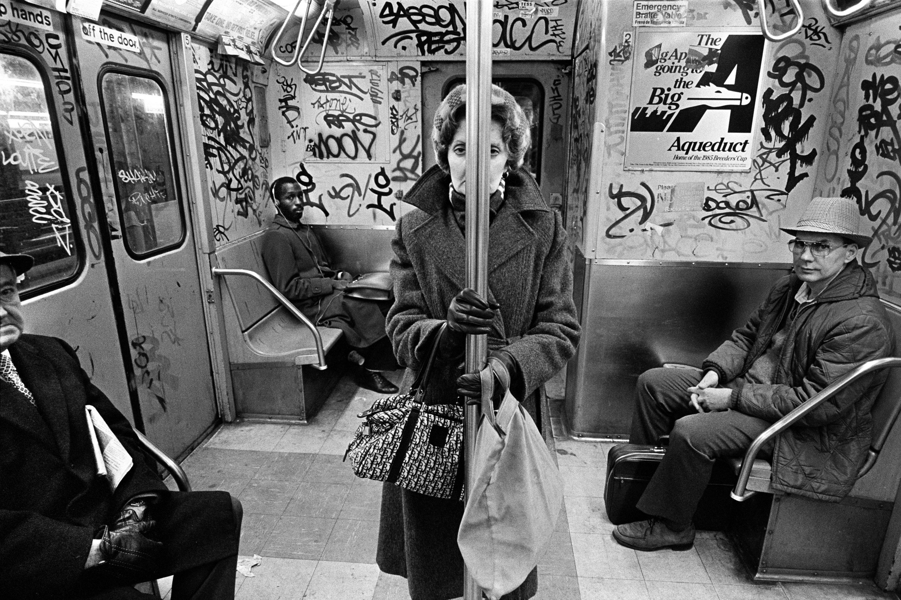

L'ARTE DI STRADA

COS’È
La street photography è un genere fotografico che ha la caratteristica di riprendere i soggetti in situazioni reali nei luoghi pubblici delle città. Ha lo scopo di evidenziare gli aspetti della società e della vita di tutti i giorni.
Scopri di più
MAESTRI
Uno dei modi migliori per imparare come fare Street Photography e per forgiare il proprio occhio critico e il proprio gusto estetico è quello di osservare gli scatti dei grandi maestri.